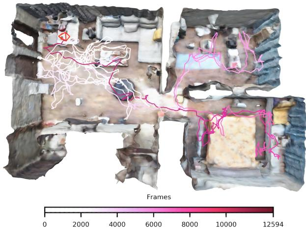
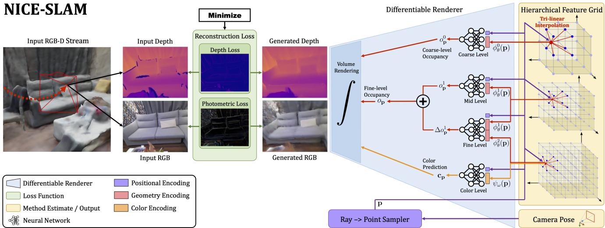
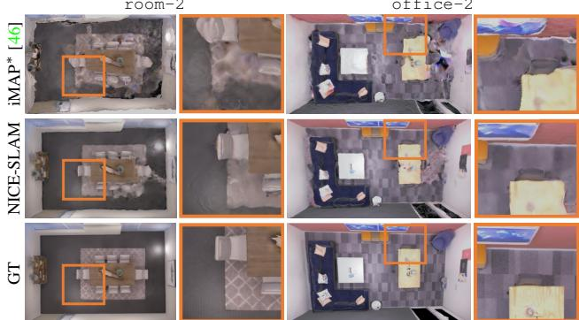
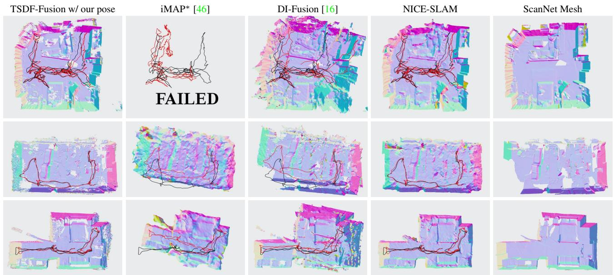
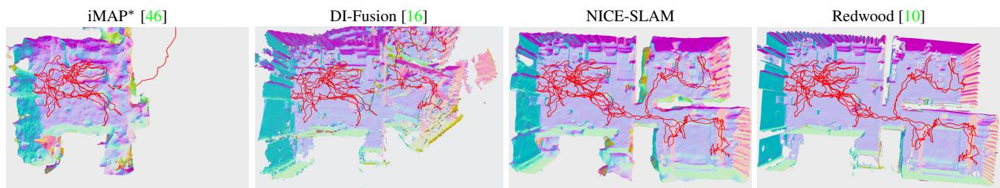
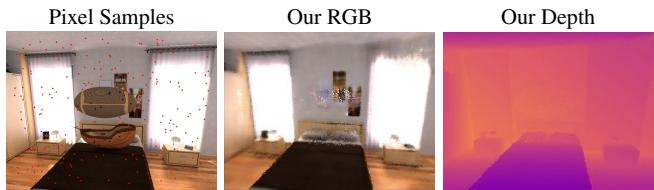
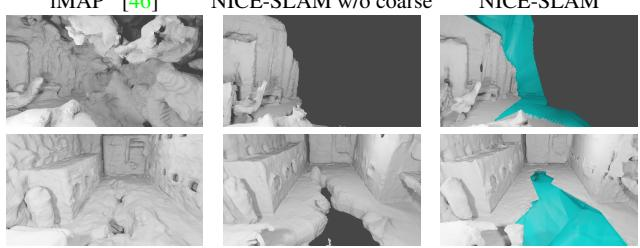
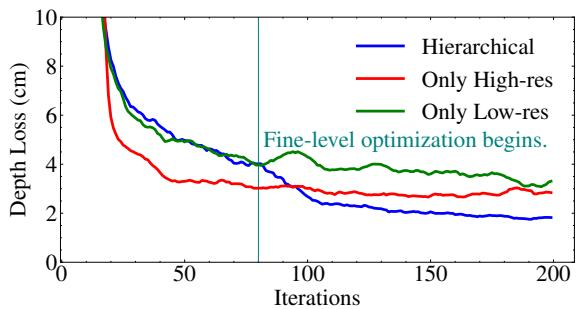

NICE-SLAM: Neural Implicit Scalable Encoding for SLAM
Zihan Zhu1,2∗ Songyou Peng2,4* Viktor Larsson3 Weiwei Xu1 Hujun Bao1 Zhaopeng Cui1 † Martin R. Oswald2,5 Marc Pollefeys2,6
1State Key Lab of CAD&CG, Zhejiang University 2ETH Zurich 3Lund University 4MPI for Intelligent Systems, Tubingen¨ 5University of Amsterdam 6Microsoft
Abstract
Neural implicit representations have recently shown encouraging results in various domains, including promising progress in simultaneous localization and mapping (SLAM). Nevertheless, existing methods produce oversmoothed scene reconstructions and have difficulty scaling up to large scenes. These limitations are mainly due to their simple fully-connected network architecture that does not incorporate local information in the observations. In this paper, we present NICE-SLAM, a dense SLAM system that incorporates multi-level local information by introducing a hierarchical scene representation. Optimizing this representation with pre-trained geometric priors enables detailed reconstruction on large indoor scenes. Compared to recent neural implicit SLAM systems, our approach is more scalable, efficient, and robust. Experiments on five challenging datasets demonstrate competitive results of NICE-SLAM in both mapping and tracking quality. Project page: https://pengsongyou.github.io/nice-slam.
1. Introduction
Dense visual Simultaneous Localization and Mapping (SLAM) is a fundamental problem in 3D computer vision with many applications in autonomous driving, indoor robotics, mixed reality, etc. In order to make a SLAM system truly useful for real-world applications, the following properties are essential. First, we desire the SLAM system to be real-time. Next, the system should have the ability to make reasonable predictions for regions without observations. Moreover, the system should be able to scale up to large scenes. Last but not least, it is crucial to be robust to noisy or missing observations.
In the scope of real-time dense visual SLAM system, many methods have been introduced for RGB-D cameras in the past years. Traditional dense visual SLAM systems [29,

Figure 1. Multi-room Apartment 3D Reconstruction using NICE-SLAM. A hierarchical feature grid jointly encodes geometry and color information and is used for both mapping and tracking. We depict the final mesh and camera tracking trajectory.
41, 58, 59] fulfil the real-time requirement and can be used in large-scale scenes, but they are unable to make plausible geometry estimation for unobserved regions. On the other hand, learning-based SLAM approaches [3,12,47,67] attain a certain level of predictive power since they typically train on task-specific datasets. Moreover, learning-based methods tend to better deal with noises and outliers. However, these methods are typically only working in small scenes with multiple objects. Recently, Sucar et al. [46] applied a neural implicit representation in the real-time dense SLAM system (called iMAP), and they showed decent tracking and mapping results for room-sized datasets. Nevertheless, when scaling up to larger scenes, e.g., an apartment consisting of multiple rooms, significant performance drops are observed in both the dense reconstruction and camera tracking accuracy.
The key limiting factor of iMAP [46] stems from its use of a single multi-layer perceptron (MLP) to represent the entire scene, which can only be updated globally with every new, potentially partial RGB-D observations. In contrast, recent works [37, 48] demonstrate that establishing multilevel grid-based features can help to preserve geometric details and enable reconstructing complex scenes, but these are offline methods without real-time capability.
In this work, we seek to combine the strengths of hierarchical scene representations with those of neural implicit representations for the task of dense RGB-D SLAM. To this end, we introduce NICE-SLAM, a dense RGB-D SLAM system that can be applied to large-scale scenes while preserving the predictive ability. Our key idea is to represent the scene geometry and appearance with hierarchical feature grids and incorporate the inductive biases of neural implicit decoders pretrained at different spatial resolutions. With the rendered depth and color images from the occupancy and color decoder outputs, we can optimize the features grids only within the viewing frustum by minimizing the re-rendering losses. We perform extensive evaluations on a wide variety of indoor RGB-D sequences and demonstrate the scalability and predictive ability of our method. Overall, we make the following contributions:
• We present NICE-SLAM, a dense RGB-D SLAM system that is real-time capable, scalable, predictive, and robust to various challenging scenarios.
• The core of NICE-SLAM is a hierarchical, grid-based neural implicit encoding. In contrast to global neural scene encodings, this representation allows for local updates, which is a prerequisite for large-scale approaches.
• We conduct extensive evaluations on various datasets which demonstrate competitive performance in both mapping and tracking.
The code is available at https://github.com/cvg/nice-slam.
2. Related Work
Dense Visual SLAM. Most modern methods for visual SLAM follow the overall architecture introduced in the seminal work by Klein et al. [19], decomposing the task into mapping and tracking. The map representations can be generally divided into two categories: view-centric and world-centric. The first anchors 3D geometry to specific keyframes, often represented as depth maps in the dense setting. One of the early examples of this category was DTAM [29]. Because of its simplicity, DTAM has been widely adapted in many recent learning-based SLAM systems. For example, [54, 68] regress both depth and pose updates. DeepV2D [51] similarly alternates between regressing depth and pose estimation but uses test-time optimization. BA-Net [50] and DeepFactors [12] simplify the optimization problem by using a set of basis depth maps. There are also some methods, e.g., CodeSLAM [3], SceneCode [67] and NodeSLAM [47], which optimize a latent representation that decodes into the keyframe or object depth maps. DROID-SLAM [52] uses regressed optical flow to define geometrical residuals for its refinement.
TANDEM [20] combines multi-view stereo with DSO [15] for a real-time dense SLAM system. On the other hand, the world-centric map representation anchors the 3D geometry in uniform world coordinates, and can be further divided into surfels [42, 58] and voxel grids, typically storing occupancies or TSDF values [11]. Voxel grids have been used extensively in RGB-D SLAM, e.g., KinectFusion [28] among other works [5, 14, 18, 33]. In our proposed pipeline we also adopt the voxel-grid representation. In contrast to previous SLAM approaches, we store implicit latent codes of the geometry and directly optimize them during mapping. This richer representation allows us to achieve more accurate geometry at lower grid resolutions.
Neural Implicit Representations. Recently, neural implicit representations demonstrated promising results for object geometry representation [8, 22, 24, 32, 34–36, 40, 55, 60, 63, 64], scene completion [6, 17, 37], novel view synthesis [23, 25, 38, 66] and also generative modelling [7, 30, 31, 43]. A few recent papers [1, 4, 9, 27, 48, 57, 61] attempt to predict scene-level geometry with RGB-(D) inputs, but they all assume given camera poses. Another set of works [21, 56, 65] tackle the problem of camera pose optimization, but they need a rather long optimization process, which is not suitable for real-time applications.
The most related work to our method is iMAP [46]. Given an RGB-D sequence, they introduce a real-time dense SLAM system that uses a single multi-layer perceptron (MLP) to compactly represent the entire scene. Nevertheless, due to the limited model capacity of a single MLP, iMAP fails to produce detailed scene geometry and accurate camera tracking, especially for larger scenes. In contrast, we provide a scalable solution akin to iMAP, that combines learnable latent embeddings with a pretrained continuous implicit decoder. In this way, our method can reconstruct complex geometry and predict detailed textures for larger indoor scenes, while maintaining much less computation and faster convergence. Notably, the works [17, 37] also combine traditional grid structures with learned feature representations for scalability, but neither of them is real-time capable. Moreover, DI-Fusion [16] also optimizes a feature grid given an RGB-D sequence, but their reconstruction often contain holes and their camera tracking is not robust for the pure surface rendering loss.
3. Method
We provide an overview of our method in Fig. 2. We represent the scene geometry and appearance using four feature grids and their corresponding decoders (Sec. 3.1). We trace the viewing rays for every pixel using the estimated camera calibration. By sampling points along a viewing ray and querying the network, we can render both depth and color values of this ray (Sec. 3.2). By minimizing the re-rendering losses for depth and color, we are able to optimize both the camera pose and the scene geometry in an alternating fashion (Sec. 3.3) for selected keyframes (Sec. 3.4).

Figure 2. System Overview. Our method takes an RGB-D image stream as input and outputs both the camera pose as well as a learned scene representation in form of a hierarchical feature grid. From right-to-left, our pipeline can be interpreted as a generative model which renders depth and color images from a given scene representation and camera pose. At test time we estimate both the scene representation and camera pose by solving the inverse problem via backpropagating the image and depth reconstruction loss through a differentiable renderer . Both entities are estimated within an alternating optimization: Mapping: The backpropagation only updates the hierarchical scene representation; Tracking: The backpropagation only updates the camera pose. For better readability we joined the fine-scale grid for geometry encoding with the equally-sized color grid and show them as one grid with two attributes (red and orange).
3.1. Hierarchical Scene Representation
We now introduce our hierarchical scene representation that combines multi-level grid features with pre-trained decoders for occupancy predictions. The geometry is encoded into three feature grids and their corresponding MLP decoders where is referred to coarse, mid and fine-level scene details. In addition, we also have a single feature grid and decoder g to model the scene appearance. Here θ and ω indicate the optimizable parameters for geometry and color, i.e., the features in the grid and the weights in the color decoder.
Mid-&Fine-level Geometric Representation. The observed scene geometry is represented in the mid- and finelevel feature grids. In the reconstruction process we use these two grids in a coarse-to-fine approach where the geometry is first reconstructed by optimizing the mid-level feature grid, followed by a refinement using the fine-level. In the implementation we use voxel grids with side lengths of 32cm and 16cm respectively, except for TUM RGB-D [45] we use 16cm and 8cm. For the mid-level, the features are directly decoded into occupancy values using the associated MLP . For any point , we get the occupancy as
where denotes that the feature grid is tri-linearly interpolated at the point p. The relatively low-resolution allow us to efficiently optimize the grid features to fit the observations. To capture smaller high-frequency details in the scene geometry we add in the fine-level features in a residual manner. In particular, the fine-level feature decoder takes as input both the corresponding mid-level feature and the fine-level feature and outputs an offset from the midlevel occupancy, i.e.,
where the final occupancy for a point is given by
Note that we fix the pre-trained decoders and , and only optimize the feature grids and throughout the entire optimization process. We demonstrate that this helps to stabilize the optimization and learn consistent geometry. Coarse-level Geometric Representation. The coarselevel feature grid aims to capture the high-level geometry of the scene (e.g., walls, floor, etc), and is optimized independently from the mid- and fine-level. The goal of the coarse-grid is to be able to predict approximate occupancy values outside of the observed geometry (which is encoded in the mid/fine-levels), even when each coarse voxel has only been partially observed. For this reason we use a very low resolution, with a side-length of 2m in the implementation. Similarly to the mid-level grid, we decode directly into occupancy values by interpolating the features and passing through the MLP , i.e.,
During tracking, the coarse-level occupancy values are only used for predicting the scene parts which are previously unobserved. Thisforecasted geometry allows us to track even when a large of the current image is previously unseen.
Pre-training Feature Decoders. In our framework we use three different fixed MLPs to decode the grid features into occupancy values. The coarse and mid-level decoders are pre-trained as part of ConvONet [37] which consists of a CNN encoder and an MLP decoder. We train both the encoder/decoder using the binary cross-entropy loss between the predicted and the ground-truth value, same as in [37]. After training, we only use the decoder MLP, as we will directly optimize the features to fit the observations in our reconstruction pipeline. In this way the pre-trained decoder can leverage resolution-specific priors learned from the training set, when decoding our optimized features.
The same strategy is used to pre-train the fine-level decoder, except that we simply concatenate the feature from the mid-level together with the fine-level feature before inputting to the decoder.
Color Representation. While we are mainly interested in the scene geometry, we also encode the color information allowing us to render RGB images which provides additional signals for tracking. To encode the color in the scene, we apply another feature grid and decoder
where indicates learnable parameters during optimization. Different from the geometry that has strong prior knowledge, we empirically found that jointly optimizing the color features and decoder improves the tracking performance (c.f. Table 5). Note that, similarly to iMAP [46], this can lead to forgetting problems and the color is only consistent locally. If we want to visualize the color for the entire scene, it can be optimized globally as a postprocessing step.
Network Design. For all MLP decoders, we use a hidden feature dimension of 32 and 5 fully-connected blocks. Except for the coarse-level geometric representation, we apply a learnable Gaussian positional encoding [46, 49] to p before serving as input to MLP decoders. We observe this allows discovery of high frequency details for both geometry and appearance.
3.2. Depth and Color Rendering
Inspired by the recent success of volume rendering in NeRF [25], we propose to also use a differentiable rendering process which integrates the predicted occupancy and colors from our scene representation in Section 3.1.
Given camera intrinsic parameters and current camera pose, we can calculate the viewing direction r of a pixel coordinate. We first sample along this ray points for stratified sampling, and also uniformly sample points near to the depth1. In total we sample points for each ray. More formally, let denote the sampling points on the ray r given the camera origin o, and corresponds to the depth value of along this ray. For every point , we can calculate their coarse-level occupancy probability , fine-level occupancy probability , and color value using Eq. (4), Eq. (3), and Eq. (5). Similar to [34], we model the ray termination probability at point pi as $\begin{array} { r } { w _ { i } ^ { c } = o _ { { \bf p } _ { i } } ^ { 0 } \prod _ { j = 1 } ^ { i - 1 } ( 1 - o _ { { \bf p } _ { j } } ^ { 0 } ) } \end{array}\begin{array} { r } { w _ { i } ^ { f } = o _ { \mathbf { p } _ { i } } \prod _ { j = 1 } ^ { i - 1 } ( 1 - o _ { \mathbf { p } _ { j } } ) } \end{array}$ for fine level.
Finally for each ray, the depth at both coarse and fine level, and color can be rendered as:
Moreover, we also calculate depth variances along the ray:
3.3. Mapping and Tracking
In this section, we provide details on the optimization of the scene geometry θ and appearance ω parameters of our hierarchical scene representation, and of the camera poses. Mapping. To optimize the scene representation mentioned in Section 3.1, we uniformly sample total M pixels from the current frame and the selected keyframes. Next, we perform optimization in a staged fashion to minimize the geometric and photometric losses.
The geometric loss is simply an loss between the observations and predicted depths at coarse or fine level:
The photometric loss is also an loss between the rendered and observed color values for M sampled pixel:
At the first stage, we optimize only the mid-level feature grid using the geometric loss in Eq. (8). Next, we jointly optimize both the mid and fine-level features with the same fine-level depth loss . Finally, we conduct a local bundle adjustment (BA) to jointly optimize feature grids at all levels, the color decoder, as well as the camera extrinsic parameters of selected keyframes:
where is the loss weighting factor.
This multi-stage optimization scheme leads to better convergence as the higher-resolution appearance and finelevel features can rely on the already refined geometry coming from mid-level feature grid.
Note that we parallelize our system in three threads to speed up the optimization process: one thread for coarselevel mapping, one for mid-&fine-level geometric and color optimization, and another one for camera tracking.
Camera Tracking. In addition to optimizing the scene representation, we also run in parallel camera tracking to optimize the camera poses of the current frame, i.e., rotation and translation {R, t}. To this end, we sample M pixels in the current frame and apply the same photometric loss in Eq. (9) but use a modified geometric loss:
The modified loss down-weights less certain regions in the reconstructed geometry [46, 62], e.g., object edges. The camera tracking is finally formulated as the following minimization problem:
The coarse feature grid is able to perform short-range predictions of the scene geometry. This extrapolated geometry provides a meaningful signal for the tracking as the camera moves into previously unobserved areas. Making it more robust to sudden frame loss or fast camera movement. We provide experiments in the supplementary material.
Robustness to Dynamic Objects. To make the optimization more robust to dynamic objects during tracking, we filter pixels with large depth/color re-rendering loss. In particular, we remove any pixel from the optimization where the loss Eq. (12) is larger than 10× the median loss value of all pixels in the current frame. Fig. 6 shows an example where a dynamic object is ignored since it is not present in the rendered RGB and depth image. Note that for this task, we only optimize the scene representation during the mapping. Jointly optimizing camera parameters and scene representations under dynamic environments is non-trivial, and we consider it as an interesting future direction.
3.4. Keyframe Selection
Similar to other SLAM systems, we continuously optimize our hierarchical scene representation with a set of selected keyframes. We maintain a global keyframe list in the same spirit of iMAP [46], where we incrementally add new keyframes based on the information gain. However, in contrast to iMAP [46], we only include keyframes which have visual overlap with the current frame when optimizing the scene geometry. This is possible since we are able to make local updates to our grid-based representation, and we do not suffer from the same forgetting problems as [46]. This keyframe selection strategy not only ensures the geometry outside of the current view remains static, but also results in a very efficient optimization problem as we only optimize the necessary parameters each time. In practice, we first randomly sample pixels and back-project the corresponding depths using the optimized camera pose. Then, we project the point cloud to every keyframe in the global keyframe list. From those keyframes that have points projected onto, we randomly select K − 2 frames. In addition, we also include the most recent keyframe and the current frame in the scene representation optimization, forming a total number of K active frames. Please refer to Section 4.4 for an ablation study on the keyframe selection strategy.
4. Experiments
We evaluate our SLAM framework on a wide variety of datasets, both real and synthetic, of varying size and complexity. We also conduct a comprehensive ablation study that supports our design choices.
4.1. Experimental Setup
Datasets. We consider 5 versatile datasets: Replica [44], ScanNet [13], TUM RGB-D dataset [45], Co-Fusion dataset [39], as well as a self-captured large apartment with multiple rooms. We follow the same pre-processing step for TUM RGB-D as in [53].
Baselines. We compare to TSDF-Fusion [11] with our camera poses with a voxel grid resolution of 2563 (results of higher resolutions are reported in the supp. material), DI-Fusion [16] using their official implementation2, as well as our faithful iMAP [46] re-implementation: iMAP∗. Our re-implementation has similar performance as the original iMAP in both scene reconstruction and camera tracking.
Metrics. We use both 2D and 3D metrics to evaluate the scene geometry. For the 2D metric, we evaluate the L1 loss on 1000 randomly-sampled depth maps from both reconstructed and ground truth meshes. For fair comparison, we apply the bilateral solver [2] to DI-Fusion [16] and TSDF-Fusion to fill depth holes before calculating the average L1 loss. For 3D metrics, we follow [46] and consider Accuracy [cm], Completion [cm], and Completion Ratio [< 5cm %], except that we remove unseen regions that are not inside any camera’s viewing frustum. For the evaluation of camera tracking, we use ATE RMSE [45]. If not specified otherwise, by default we report the average results of 5 runs. Implementation Details. We run our SLAM system on a desktop PC with a 3.80GHz Intel i7-10700K CPU and an NVIDIA RTX 3090 GPU. In all our experiments, we use the number of sampling points on a ray and , photometric loss weighting and For small-scale synthetic datasets (Replica and Co-Fusion), we select keyframes and sample M = 1000 and Mt = 200 pixels. For large-scale real datasets (ScanNet and our self-captured scene), we use K = 10, M = 5000, . As for the challenging TUM RGB-D dataset, we use K = 10, M = 5000, . For our re-implementation iMAP∗, we follow all the hyperparameters mentioned in [46] except that we set the number of sampling pixels to 5000 since it leads to better performance in both reconstruction and tracking.

Figure 3. Reconstruction Results on the Replica Dataset [44]. refers to our iMAP re-implementation.
| TSDF-Fusion [11] | iMAP* [46] | DI-Fusion [16] | NICE-SLAM | |
| Mem. (MB) ↓ | 67.10 | 1.04 | 3.78 | 12.02 |
| Depth L1 ↓ | 7.57 | 7.64 | 23.33 | 3.53 |
| Acc. ↓ | 1.60 | 6.95 | 19.40 | 2.85 |
| Comp. ↓ | 3.49 | 5.33 | 10.19 | 3.00 |
| Comp. Ratio ↑ | 86.08 | 66.60 | 72.96 | 89.33 |
Table 1. Reconstruction Results for the Replica Dataset [44] (average over 8 scenes). iMAP∗ indicates our re-implementation of iMAP. TSDF-Fusion uses camera poses from NICE-SLAM. Detailed metrics for each scene can be found in the supp. material.
4.2. Evaluation of Mapping and Tracking
Evaluation on Replica [44]. To evaluate on Replica [44], we use the same rendered RGB-D sequence provided by the authors of iMAP. With the hierarchical scene representation, our method is able to reconstruct the geometry precisely within limited iterations. As shown in Table 1, NICE-SLAM significantly outperforms baseline methods on almost all metrics, while keeping a reasonable memory consumption. Qualitatively, we can see from Fig. 3 that our method produces sharper geometry and less artifacts.
Evaluation on TUM RGB-D [45]. We also evaluate the camera tracking performance on the small-scale TUM RGB-D dataset. As shown in Table 2, our method outperforms iMAP and DI-Fusion even though ours is by design more suitable for large scenes. As can be noticed, the stateof-the-art approaches for tracking (e.g. BAD-SLAM [42], ORB-SLAM2 [26]) still outperform the methods based on implicit scene representations (iMAP [46] and ours). Nevertheless, our method significantly reduces the gap between these two categories, while retaining the representational advantages of implicit representations.
| fr1/desk | fr2/xyz | fr3/office | |
| iMAP [46] | 4.9 | 2.0 | 5.8 |
| 7.2 | 2.1 | 9.0 | |
| DI-Fusion [16] | 4.4 | 2.3 | 15.6 |
| NICE-SLAM | 2.7 | 1.8 | 3.0 |
| BAD-SLAM [42] | 1.7 | 1.1 | 1.7 |
| Kintinuous [59] | 3.7 | 2.9 | 3.0 |
| ORB-SLAM2 [26] | 1.6 | 0.4 | 1.0 |
Table 2. Camera Tracking Results on TUM RGB-D [45]. ATE RMSE [cm] (↓) is used as the evaluation metric. NICE-SLAM reduces the gap between SLAM methods with neural implicit representations and traditional approaches. We report the best out of 5 runs for all methods in this table. The numbers for iMAP, BAD-SLAM, Kintinuous, and ORB-SLAM2 are taken from [46].
| Scene ID | 0000 | 0059 | 0106 | 0169 | 0181 | 0207 | Avg. |
| iMAP* [46] | 55.95 | 32.06 | 17.50 | 70.51 | 32.10 | 11.91 | 36.67 |
| DI-Fusion [16] | 62.99 | 128.00 | 18.50 | 75.80 | 87.88 | 100.19 | 78.89 |
| NICE-SLAM | 8.64 | 12.25 | 8.09 | 10.28 | 12.93 | 5.59 | 9.63 |
Table 3. Camera Tracking Results on ScanNet [13]. Our approach yields consistently better results on this dataset. ATE RMSE (↓) is used as the evaluation metric.
Evaluation on ScanNet [13]. We select multiple large scenes from ScanNet [13] to benchmark the scalability of different methods. For the geometry shown in Fig. 4, we can clearly notice that NICE-SLAM produces sharper and more detailed geometry over TSDF-Fusion, DI-Fusion and iMAP∗. In terms of tracking, as can be observed, iMAP∗ and DI-Fusion either completely fails or introduces large drifting, while our method successfully reconstructs the entire scene. Quantitatively speaking, our tracking results are also significantly more accurate than both DI-Fusion and iMAP∗ as shown in Table 3.
Evaluation on a Larger Scene. To evaluate the scalability of our method we captured a sequence in a large apartment with multiple rooms. Fig. 1 and Fig. 5 show the reconstructions obtained using NICE-SLAM, DI-Fusion [16] and iMAP∗ [46]. For reference we also show the 3D reconstruction using the offline tool Redwood [10] in Open3D [69]. We can see that NICE-SLAM has comparable results with the offline method, while iMAP∗ and DI-Fusion fails to reconstruct the full sequence.
4.3. Performance Analysis
Besides the evaluation on scene reconstruction and camera tracking on various datasets, in the following we also evaluate other characteristics of the proposed pipeline.

Figure 4. 3D Reconstruction and Tracking on ScanNet [13]. The black trajectory is from ScanNet [13], the red trajectory is the methods tracking result. We tried various hyperparameters for iMAP∗ and present the best results which are mostly inferior.

Figure 5. 3D Reconstruction and Tracking on a Multi-room Apartment. The camera tracking trajectory is shown in red. iMAP∗ and DI-Fusion failed to reconstruct the entire sequence. We also show the result of an offline method [10] for reference.
Computation Complexity. First, we compare the number of floating point operations (FLOPs) needed for querying color and occupancy/volume density of one 3D point, see Table 4. Our method requires only 1/4 FLOPs of iMAP. It is worth mentioning that FLOPs in our approach remain the same even for very large scenes. In contrast, due to the use of a single MLP in iMAP, the capacity limit of the MLP might require more parameters that result in more FLOPs.
Runtime. We also compare in Table 4 the runtime for tracking and mapping using the same number of pixel samples for tracking and M = 1000 for mapping). We can notice that our method is over 2× and 3× faster than iMAP in tracking and mapping. This indicates the advantage of using feature grids with shallow MLP decoders over a single heavy MLP.
Robustness to Dynamic Objects. Here we consider the Co-Fusion dataset [39] which contains dynamically moving objects. As illustrated in Fig. 6, our method correctly identifies and ignores pixel samples falling into the dynamic object during optimization, which leads to better scene representation modelling (see the rendered RGB and depths). Furthermore, we also compare with iMAP∗ on the same sequence for camera tracking. The ATE RMSE scores of ours and iMAP∗ is 1.6cm and 7.8cm respectively, which clearly demonstrates our robustness to dynamic objects.
| FLOPs [×103]↓ Tracking [ms]↓ Mapping [ms]↓ | |||
| iMAP [46] | 443.91 | 101 | 448 |
| NICE-SLAM | 104.16 | 47 | 130 |
Table 4. Computation & Runtime. Our scene representation does not only improve the reconstruction and tracking quality, but is also faster. The runtimes for iMAP are taken from [46].
Geometry Forecast and Hole Filling. As illustrated in Fig. 7, we are able to complete unobserved scene regions thanks to the use of coarse-level scene prior. In contrast, the unseen regions reconstructed by iMAP∗ are very noisy since no scene prior knowledge is encoded in iMAP∗.
iMAP∗ [46]

Figure 6. Robustness to Dynamic Objects. We show the sampled pixels overlaid on an image with a dynamic object in the center (left), our rendered RGB (middle) and our rendered depth (right) to illustrate the ability of handling dynamic environments. The masked pixel samples during tracking are colored in black, while the used ones are shown in red.

Figure 7. Geometry Forecast and Hole Filling. The white colored area is the region with observations, and cyan indicates the unobserved but predicted region. Thanks to the use of coarse-level scene prior, our method has better prediction capability compared to iMAP∗. This in turn also improves our tracking performance.
4.4. Ablation Study
In this section, we investigate the choice of our hierarchical architecture and the importance of color representation. Hierarchical Architecture. Fig. 8 compares our hierarchical architecture against: a) one feature grid with the same resolution as our fine-level representation (Only High-res); b) one feature grid with mid-level resolution (Only Lowres). Our hierarchical architecture can quickly add geometric details when the fine-level representation participates in the optimization, which also leads to better convergence.
Local BA. We verify the effectiveness of local bundle adjustment on ScanNet [13]. If we do not jointly optimize camera poses for K keyframes together with the scene representation (w/o Local BA in Table 5), the camera tracking is not only significantly less accurate, but also less robust.
Color Representation. In Table 5 we compare our method without the photometric loss in Eq. (9). It shows that, although our estimated colors are not perfect due to the limited optimization budget and the lack of sampling points, learning such a color representation still plays an important role for accurate camera tracking.
Keyframe Selection. We test our method using iMAP’s keyframe selection strategy (w/ iMAP keyframes in Table 5) where they select keyframes from the entire scene. This is necessary for iMAP to prevent their simple MLP from forgetting the previous geometry. Nevertheless, it also leads to slow convergence and inaccurate tracking.
| ATE RMSE (↓) | | w/o Local BA w/o | w/ iMAP keyframes | |Full | |
| Mean | 37.74 | 32.02 | 12.10 | 9.63 |
| Std. | 30.97 | 21.98 | 3.38 | 0.62 |
Table 5. Ablation Study. We investigate the usefulness of local BA, color representation, as well as our keyframe selection strategy. We run each scene 5 times and calculate their mean and standard deviation of ATE RMSE (↓). We report the average values over 6 scenes in ScanNet [13].

Figure 8. Hierarchical Architecture Ablation. Geometry optimization on a single depth image on Replica [44] with different architectures. The curves are smoothed for better visualization.
5. Conclusion
We presented NICE-SLAM, a dense visual SLAM approach that combines the advantages of neural implicit representations with the scalability of an hierarchical gridbased scene representation. Compared to a scene representation with a single big MLP, our experiments demonstrate that our representation (tiny MLPs + multi-res feature grids) not only guarantees fine-detailed mapping and high tracking accuracy, but also faster speed and much less computation due to the benefit of local scene updates. Besides, our network is able to fill small holes and extrapolate scene geometry into unobserved regions which in turn stabilizes the camera tracking.
Limitations. The predictive ability of our method is restricted to the scale of the coarse representation. In addition, our method does not perform loop closures, which is an interesting future direction. Finally, although traditional methods lack some of the features, there is still a performance gap to the learning-based approaches that needs to be closed.
Acknowledgements. The authors thank the Max Planck ETH Center for Learning Systems (CLS) for supporting Songyou Peng. We also thank Edgar Sucar for providing additional implementation details about iMAP. Special thanks to Chi Wang for offering the data collection site. This work was partially supported by the NSFC (No. 62102356), Zhejiang Lab (2021PE0AC01). Weiwei Xu is partially supported by NSFC (No. 61732016).
References
[1] Dejan Azinovic, Ricardo Martin-Brualla, Dan B Goldman,´ Matthias Nießner, and Justus Thies. Neural rgb-d surface reconstruction. In CVPR, 2022. 2
[2] Jonathan T Barron and Ben Poole. The fast bilateral solver. In European conference on computer vision, pages 617–632. Springer, 2016. 5
[3] Michael Bloesch, Jan Czarnowski, Ronald Clark, Stefan Leutenegger, and Andrew J Davison. Codeslam—learning a compact, optimisable representation for dense visual slam. In CVPR, 2018. 1, 2
[4] Aljaz Bo ˇ ziˇ c, Pablo Palafox, Justus Thies, Angela Dai, andˇ Matthias Nießner. Transformerfusion: Monocular rgb scene reconstruction using transformers. Proc. Neural Information Processing Systems (NeurIPS), 2021. 2
[5] Erik Bylow, Jurgen Sturm, Christian Kerl, Fredrik Kahl, and¨ Daniel Cremers. Real-time camera tracking and 3d reconstruction using signed distance functions. In RSS, 2013. 2
[6] Rohan Chabra, Jan E Lenssen, Eddy Ilg, Tanner Schmidt, Julian Straub, Steven Lovegrove, and Richard Newcombe. Deep local shapes: Learning local sdf priors for detailed 3d reconstruction. In ECCV, 2020. 2
[7] Eric R Chan, Marco Monteiro, Petr Kellnhofer, Jiajun Wu, and Gordon Wetzstein. pi-gan: Periodic implicit generative adversarial networks for 3d-aware image synthesis. In CVPR, 2021. 2
[8] Zhiqin Chen and Hao Zhang. Learning implicit fields for generative shape modeling. In CVPR, 2019. 2
[9] Jaesung Choe, Sunghoon Im, Franc¸ois Rameau, Minjun Kang, and In So Kweon. Volumefusion: Deep depth fusion for 3d scene reconstruction. In ICCV, 2021. 2
[10] Sungjoon Choi, Qian-Yi Zhou, and Vladlen Koltun. Robust reconstruction of indoor scenes. In CVPR, 2015. 6, 7
[11] Brian Curless and Marc Levoy. A volumetric method for building complex models from range images. In Proceedings of the 23rd annual conference on Computer graphics and interactive techniques, 1996. 2, 5, 6
[12] Jan Czarnowski, Tristan Laidlow, Ronald Clark, and Andrew J Davison. Deepfactors: Real-time probabilistic dense monocular slam. IEEE Robotics and Automation Letters, 2020. 1, 2
[13] Angela Dai, Angel X. Chang, Manolis Savva, Maciej Halber, Thomas Funkhouser, and Matthias Nießner. Scannet: Richly-annotated 3d reconstructions of indoor scenes. In CVPR, 2017. 5, 6, 7, 8
[14] Angela Dai, Matthias Nießner, Michael Zollhofer, Shahram¨ Izadi, and Christian Theobalt. Bundlefusion: Real-time globally consistent 3d reconstruction using on-the-fly surface reintegration. ACM Transactions on Graphics (ToG), 2017. 2
[15] Jakob Engel, Vladlen Koltun, and Daniel Cremers. Direct sparse odometry. IEEE TPAMI, 40(3):611–625, 2017. 2
[16] Jiahui Huang, Shi-Sheng Huang, Haoxuan Song, and Shi-Min Hu. Di-fusion: Online implicit 3d reconstruction with deep priors. In Proceedings of the IEEE/CVF Conference on Computer Vision and Pattern Recognition, pages 8932– 8941, 2021. 2, 5, 6, 7
[17] Chiyu Jiang, Avneesh Sud, Ameesh Makadia, Jingwei Huang, Matthias Nießner, Thomas Funkhouser, et al. Local implicit grid representations for 3d scenes. In CVPR, 2020. 2
[18] Olaf Kahler, Victor Adrian Prisacariu, and David W. Mur-¨ ray. Real-time large-scale dense 3d reconstruction with loop closure. In ECCV, 2016. 2
[19] Georg Klein and David Murray. Parallel tracking and mapping on a camera phone. In ISMAR, 2009. 2
[20] Lukas Koestler, Nan Yang, Niclas Zeller, and Daniel Cremers. Tandem: Tracking and dense mapping in real-time using deep multi-view stereo. In CoRL, 2021. 2
[21] Chen-Hsuan Lin, Wei-Chiu Ma, Antonio Torralba, and Simon Lucey. Barf: Bundle-adjusting neural radiance fields. In ICCV, 2021. 2
[22] Shaohui Liu, Yinda Zhang, Songyou Peng, Boxin Shi, Marc Pollefeys, and Zhaopeng Cui. Dist: Rendering deep implicit signed distance function with differentiable sphere tracing. In CVPR, 2020. 2
[23] Ricardo Martin-Brualla, Noha Radwan, Mehdi SM Sajjadi, Jonathan T Barron, Alexey Dosovitskiy, and Daniel Duckworth. Nerf in the wild: Neural radiance fields for unconstrained photo collections. In CVPR, 2021. 2
[24] Lars Mescheder, Michael Oechsle, Michael Niemeyer, Sebastian Nowozin, and Andreas Geiger. Occupancy networks: Learning 3d reconstruction in function space. In CVPR, 2019. 2
[25] B. Mildenhall, P. P. Srinivasan, M. Tancik, J. T. Barron, R. Ramamoorthi, and N. Ren. Nerf: Representing scenes as neural radiance fields for view synthesis. In ECCV, 2020. 2, 4
[26] R. Mur-Artal and J. D. Tardos. ORB-SLAM2: An Open-´ Source SLAM System for Monocular, Stereo, and RGB-D Cameras. IEEE Transactions on Robotics, 2017. 6
[27] Zak Murez, Tarrence van As, James Bartolozzi, Ayan Sinha, Vijay Badrinarayanan, and Andrew Rabinovich. Atlas: Endto-end 3d scene reconstruction from posed images. In ECCV, 2020. 2
[28] Richard A Newcombe, Shahram Izadi, Otmar Hilliges, David Molyneaux, David Kim, Andrew J Davison, Pushmeet Kohi, Jamie Shotton, Steve Hodges, and Andrew Fitzgibbon. Kinectfusion: Real-time dense surface mapping and tracking. In ISMAR, 2011. 2
[29] Richard A Newcombe, Steven J Lovegrove, and Andrew J Davison. Dtam: Dense tracking and mapping in real-time. In ICCV, 2011. 1, 2
[30] Michael Niemeyer and Andreas Geiger. Campari: Cameraaware decomposed generative neural radiance fields. In 3DV, 2021. 2
[31] Michael Niemeyer and Andreas Geiger. Giraffe: Representing scenes as compositional generative neural feature fields. In CVPR, 2021. 2
[32] Michael Niemeyer, Lars Mescheder, Michael Oechsle, and Andreas Geiger. Differentiable volumetric rendering: Learning implicit 3d representations without 3d supervision. In CVPR, 2020. 2
[33] Matthias Nießner, Michael Zollhofer, Shahram Izadi, and¨ Marc Stamminger. Real-time 3d reconstruction at scale using voxel hashing. ACM Transactions on Graphics (ToG), 2013. 2
[34] Michael Oechsle, Songyou Peng, and Andreas Geiger. Unisurf: Unifying neural implicit surfaces and radiance fields for multi-view reconstruction. In ICCV, 2021. 2, 4
[35] Jeong Joon Park, Peter Florence, Julian Straub, Richard A. Newcombe, and Steven Lovegrove. Deepsdf: Learning continuous signed distance functions for shape representation. In CVPR, 2019. 2
[36] Songyou Peng, Chiyu ”Max” Jiang, Yiyi Liao, Michael Niemeyer, Marc Pollefeys, and Andreas Geiger. Shape as points: A differentiable poisson solver. In NeurIPS, 2021. 2
[37] Songyou Peng, Michael Niemeyer, Lars Mescheder, Marc Pollefeys, and Andreas Geiger. Convolutional occupancy networks. In ECCV, 2020. 1, 2, 4
[38] Christian Reiser, Songyou Peng, Yiyi Liao, and Andreas Geiger. Kilonerf: Speeding up neural radiance fields with thousands of tiny mlps. In ICCV, 2021. 2
[39] Martin Runz and Lourdes Agapito. Co-fusion: Real-time¨ segmentation, tracking and fusion of multiple objects. In ICRA, 2017. 5, 7
[40] Shunsuke Saito, Zeng Huang, Ryota Natsume, Shigeo Morishima, Angjoo Kanazawa, and Hao Li. Pifu: Pixel-aligned implicit function for high-resolution clothed human digitization. In ICCV, 2019. 2
[41] Thomas Schops, Torsten Sattler, and Marc Pollefeys. BAD¨ SLAM: bundle adjusted direct RGB-D SLAM. In IEEE Conference on Computer Vision and Pattern Recognition, CVPR 2019, Long Beach, CA, USA, June 16-20, 2019, pages 134– 144. Computer Vision Foundation / IEEE, 2019. 1
[42] Thomas Schops, Torsten Sattler, and Marc Pollefeys. BAD SLAM: Bundle adjusted direct RGB-D SLAM. In CVPR, 2019. 2, 6
[43] Katja Schwarz, Yiyi Liao, Michael Niemeyer, and Andreas Geiger. Graf: Generative radiance fields for 3d-aware image synthesis. In NeurIPS, 2020. 2
[44] Julian Straub, Thomas Whelan, Lingni Ma, Yufan Chen, Erik Wijmans, Simon Green, Jakob J. Engel, Raul Mur-Artal, Carl Ren, Shobhit Verma, Anton Clarkson, Mingfei Yan, Brian Budge, Yajie Yan, Xiaqing Pan, June Yon, Yuyang Zou, Kimberly Leon, Nigel Carter, Jesus Briales, Tyler Gillingham, Elias Mueggler, Luis Pesqueira, Manolis Savva, Dhruv Batra, Hauke M. Strasdat, Renzo De Nardi, Michael Goesele, Steven Lovegrove, and Richard Newcombe. The Replica dataset: A digital replica of indoor spaces. arXiv preprint arXiv:1906.05797, 2019. 5, 6, 8
[45] Jurgen Sturm, Nikolas Engelhard, Felix Endres, Wolfram¨ Burgard, and Daniel Cremers. A benchmark for the evaluation of rgb-d slam systems. In IROS, 2012. 3, 5, 6
[46] Edgar Sucar, Shikun Liu, Joseph Ortiz, and Andrew Davison. iMAP: Implicit mapping and positioning in real-time. In ICCV, 2021. 1, 2, 4, 5, 6, 7, 8
[47] Edgar Sucar, Kentaro Wada, and Andrew Davison. Nodeslam: Neural object descriptors for multi-view shape reconstruction. In 3DV, 2020. 1, 2
[48] Jiaming Sun, Yiming Xie, Linghao Chen, Xiaowei Zhou, and Hujun Bao. Neuralrecon: Real-time coherent 3d reconstruction from monocular video. In CVPR, 2021. 1, 2
[49] Matthew Tancik, Pratul P Srinivasan, Ben Mildenhall, Sara Fridovich-Keil, Nithin Raghavan, Utkarsh Singhal, Ravi Ramamoorthi, Jonathan T Barron, and Ren Ng. Fourier features let networks learn high frequency functions in low dimensional domains. In NeurIPS, 2020. 4
[50] Chengzhou Tang and Ping Tan. Ba-net: Dense bundle adjustment networks. In ICLR, 2018. 2
[51] Zachary Teed and Jia Deng. Deepv2d: Video to depth with differentiable structure from motion. In ICLR, 2019. 2
[52] Zachary Teed and Jia Deng. Droid-slam: Deep visual slam for monocular, stereo, and rgb-d cameras. In NeurIPS, 2021. 2
[53] Zachary Teed and Jia Deng. Tangent space backpropagation for 3d transformation groups. In Proceedings of the IEEE/CVF Conference on Computer Vision and Pattern Recognition (CVPR), 2021. 5
[54] Benjamin Ummenhofer, Huizhong Zhou, Jonas Uhrig, Nikolaus Mayer, Eddy Ilg, Alexey Dosovitskiy, and Thomas Brox. Demon: Depth and motion network for learning monocular stereo. In CVPR, 2017. 2
[55] Peng Wang, Lingjie Liu, Yuan Liu, Christian Theobalt, Taku Komura, and Wenping Wang. Neus: Learning neural implicit surfaces by volume rendering for multi-view reconstruction. In NeurIPS, 2021. 2
[56] Zirui Wang, Shangzhe Wu, Weidi Xie, Min Chen, and Victor Adrian Prisacariu. Nerf–: Neural radiance fields without known camera parameters. arXiv preprint arXiv:2102.07064, 2021. 2
[57] Silvan Weder, Johannes L Schonberger, Marc Pollefeys, and Martin R Oswald. Neuralfusion: Online depth fusion in latent space. In CVPR, 2021. 2
[58] Thomas Whelan, Stefan Leutenegger, R Salas-Moreno, Ben Glocker, and Andrew Davison. Elasticfusion: Dense slam without a pose graph. In RSS, 2015. 1, 2
[59] T. Whelan, J. B. McDonald, M. Kaess, M. Fallon, H. Johannsson, and J. J. Leonard. Kintinuous: Spatially Extended KinectFusion. In RSS ’12 Workshop on RGB-D: Advanced Reasoning with Depth Cameras, 2012. 1, 6
[60] Qiangeng Xu, Weiyue Wang, Duygu Ceylan, Radom´ır Mech, and Ulrich Neumann. DISN: deep implicit surface network for high-quality single-view 3d reconstruction. In NeurIPS, 2019. 2
[61] Zike Yan, Yuxin Tian, Xuesong Shi, Ping Guo, Peng Wang, and Hongbin Zha. Continual neural mapping: Learning an implicit scene representation from sequential observations. In ICCV, 2021. 2
[62] Nan Yang, Lukas von Stumberg, Rui Wang, and Daniel Cremers. D3vo: Deep depth, deep pose and deep uncertainty for monocular visual odometry. In CVPR, 2020. 5
[63] Lior Yariv, Jiatao Gu, Yoni Kasten, and Yaron Lipman. Volume rendering of neural implicit surfaces. In NeurIPS, 2021. 2
[64] Lior Yariv, Yoni Kasten, Dror Moran, Meirav Galun, Matan Atzmon, Ronen Basri, and Yaron Lipman. Multiview neu-
ral surface reconstruction by disentangling geometry and appearance. In NeurIPS, 2020. 2
[65] Lin Yen-Chen, Pete Florence, Jonathan T Barron, Alberto Rodriguez, Phillip Isola, and Tsung-Yi Lin. inerf: Inverting neural radiance fields for pose estimation. In IROS, 2020. 2
[66] Kai Zhang, Gernot Riegler, Noah Snavely, and Vladlen Koltun. Nerf++: Analyzing and improving neural radiance fields. arXiv preprint arXiv:2010.07492, 2020. 2
[67] Shuaifeng Zhi, Michael Bloesch, Stefan Leutenegger, and Andrew J Davison. Scenecode: Monocular dense semantic reconstruction using learned encoded scene representations. In CVPR, 2019. 1, 2
[68] Huizhong Zhou, Benjamin Ummenhofer, and Thomas Brox. Deeptam: Deep tracking and mapping. In ECCV, 2018. 2
[69] Qian-Yi Zhou, Jaesik Park, and Vladlen Koltun. Open3D: A modern library for 3D data processing. arXiv:1801.09847, 2018. 6
md/2022_NICE-SLAM.md 预渲染生成（OCR 语料，插图取自原文）。
公式以 MathML 呈现，浏览器原生渲染，不依赖外部脚本或字体 CDN。